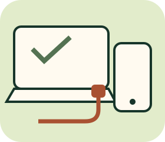

SMART CHOICES / NOT JUST BIG NUMBERS
3C達人
規格不迷路
先看用途，再看規格；插得進不代表都相容。

12關，拆開規格迷思
金額／單位填答、筆電需求篩選、充電組合配對與日常情境。全部使用虛構產品和明示條件，不做即時報價、品牌排行或購買推薦。
不限時、不操作真實裝置、不檢測你的電腦。不儲存或上傳作答，重新整理清空；通關不是維修或資訊安全能力認證。
本輪完整回顧
帶走三個原則
- 先列需求、預算和必要配件；規格數字不能跨用途直接比大小。
- 充電、資料速率和影像分開查，核對裝置、埠、線與配件的共同能力。
- 備份要能還原，更新要查來源；不靠一個功能保證永遠安全。
查核日2026-11-14。單位依NIST二進位前綴說明；充電參考USB-IF Power Delivery；更新與備份參考CISA更新指南與備份／復原建議。一般選購與排查為原創教學情境，不是官方產品規格表。